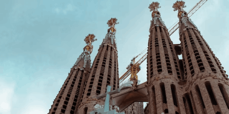
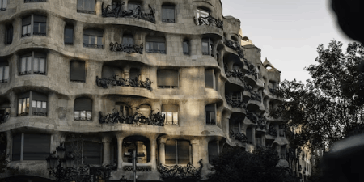
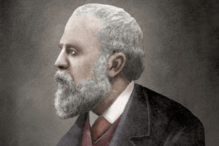

Gaudi

Antoni Gaudí, né le 25 juin 1852 à Reus, en Catalogne, était un architecte espagnol emblématique du modernisme catalan. Enfant créatif, il montra dès son jeune âge un intérêt marqué pour l'art et l'architecture. Gaudí étudia à l'École supérieure d'architecture de Barcelone, où sa passion pour les formes organiques et la nature se développa.

Son style distinctif émergea pleinement dans ses œuvres, caractérisé par des formes sinueuses, des arcs paraboliques et des motifs inspirés de la nature. La Sagrada Família, l'une de ses créations les plus célèbres, incarne son génie architectural. Gaudí consacra la majeure partie de sa vie à ce projet colossal, mais malheureusement, il ne vit pas sa réalisation complète, décédant en 1926.
L'architecte avait une approche unique en combinant l'esthétique avec la fonctionnalité. Casa Batlló et Casa Milà, deux édifices résidentiels à Barcelone, illustrent parfaitement son talent pour transformer des structures en œuvres d'art fonctionnelles. Gaudí intégra des éléments tels que la céramique, la ferronnerie et le verre dans ses créations, créant des détails visuellement époustouflants.
Au fil des ans, Gaudí devint un symbole de la Catalogne et de son identité culturelle distincte. Sa vision novatrice et son héritage artistique sont honorés dans le monde entier. La reconnaissance de son génie ne cessa de croître après sa mort, et ses œuvres demeurent des destinations touristiques prisées, attirant des admirateurs de l'art et de l'architecture du monde entier. Antonio Gaudí demeure une icône incontestée du modernisme catalan, son influence se perpétuant à travers le temps.
